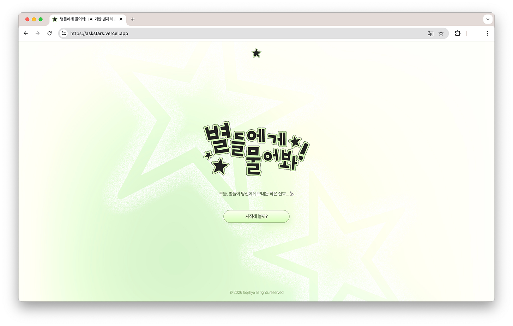
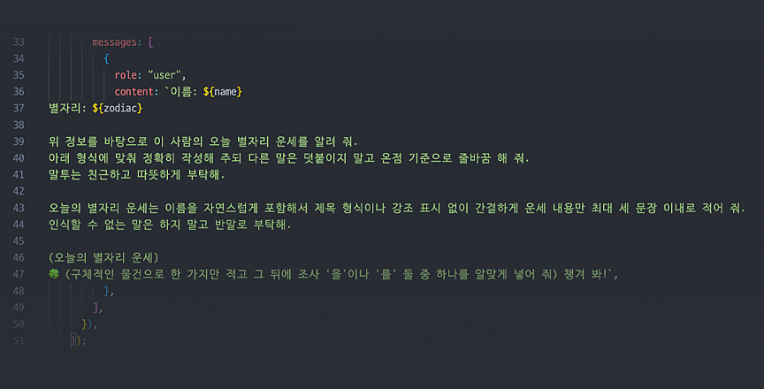
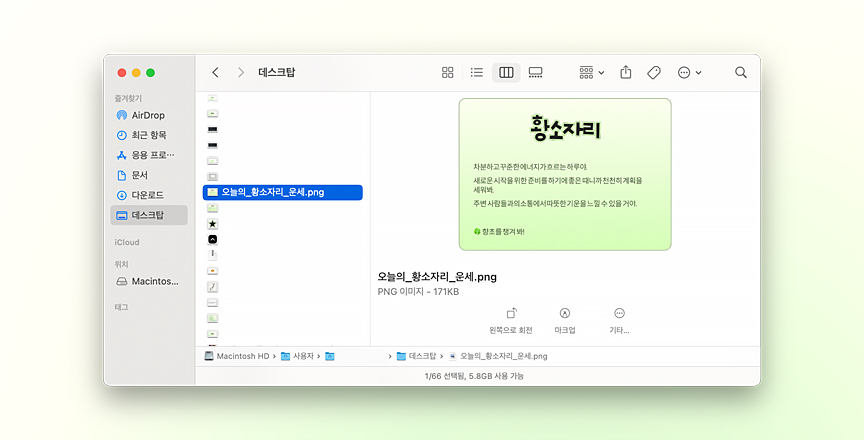

개인 프로젝트
2026
Overview
'별들에게 물어봐!'는 AI 기반 별자리 운세 안내 웹 서비스입니다.
평소 아침마다 별자리 운세를 확인하는 습관에서 아이디어를 얻어, React와 Claude API 연동 학습을 겸해 시작하게 된 개인 프로젝트입니다.
사용자가 이름과 생년월일을 입력하면 함수로 별자리를 판별하고, 해당 별자리 정보를 Claude API에 전달해 오늘의 운세와 행운 아이템을 응답받아 화면에 출력합니다. 결과 화면은 이미지로 저장해 여러 사람과 공유할 수 있도록 했습니다.
기획부터 배포까지 프로젝트 전 과정을 간단하지만 직접 경험해 보며 프로젝트 진행 워크플로우를 한 층 더 잘 이해할 수 있게 되었습니다.
Work Detail
Tech Stack
Tool

기획부터 배포까지
본 프로젝트는 아이디어 구상부터 디자인, 개발, 배포까지 전 과정을 단독으로 진행했습니다.
Figma로 화면을 설계하고 Photoshop으로 디자인 요소를 제작했으며, React + Vite로 구현하고 Express 백엔드 서버를 구축해 Claude API 키를 안전하게 관리했습니다.
서버는 Render, 클라이언트는 Vercel에 각각 배포하며 서비스 환경을 경험했고, 기획부터 배포까지 하나의 웹 서비스를 완성하는 전체 흐름을 경험할 수 있었습니다.
CSS Modules를 활용한 스타일 모듈화
CSS Modules를 활용해 페이지 단위로 스타일을 모듈화했습니다. 빌드 시 클래스명이 자동으로 고유한 값으로 변환되어 페이지 간 스타일 충돌을 방지할 수 있었습니다.

Claude API 연동
사용자 이름과 생년월일을 기반으로 오늘의 별자리 운세와 행운 아이템 정보를 제공하기 위해 평소 사용하는 Claude의 API를 연동해 활용했습니다.
작업 초반에는 단순한 프롬프트 작성으로 원하는 결과를 얻지 못했지만, 출력 형식·말투·항목 등을 구체적으로 명시하는 방향으로 계속 수정하며 원하는 결과값을 얻을 수 있었습니다.
이 과정에서 프롬프트의 구체성은 응답 정확도와 직결되기 때문에 정확하고 자세한 프롬프트 작성이 중요하다는 것을 깨달았습니다.

html2canvas 활용
작업이 어느 정도 완성되었을 때 주변분들에게 테스트를 부탁드렸습니다. 그중 '결과 화면을 이미지로 저장하고 공유할 수 있었으면 좋겠다'는 피드백에 html2canvas를 활용하여 해당 기능을 구현했습니다.
브라우저의 기본 기능만으로는 HTML을 이미지로 저장할 수 없기 때문에 html2canvas를 활용해 결과 화면을 canvas로 변환한 뒤 PNG 파일로 다운로드할 수 있도록 했습니다.
다음 프로젝트
삼성화재 다이렉트 착